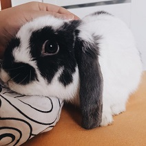

Tosiek
Kim jestem?
Jestem baranem francuskim miniaturką, a przynajmniej tak mówią rodzice i Pani doktor.
Urwis jakich mało? to chyba też o mnie.
Moim ulubionym zajęciem jest leniuchowanie i gryzienie laczków moich rodziców.
Nie pogardzi świeżymi owocami i warzywami.
Zakupy najchętniej robimy na DLA KRÓLIKA, ale to mama musi płacić, ja przecież nie mam kieszonkowego.
Jeśli chcesz wiedzieć co najczęściej jadam zapraszam tutaj